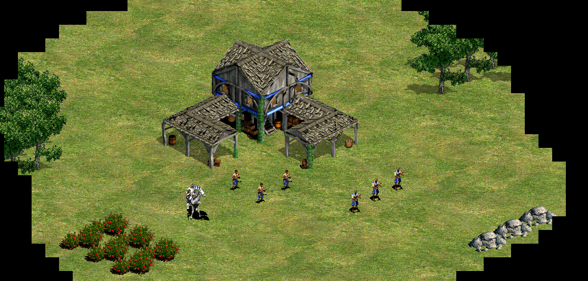

Contribution
Entities Manager:
A module that manages all the entities definitions and all the current entities stats in the game. Entities definitions are loaded and the entities factory use them to create the new ones. When an entity dies this module is the responsible to delete it.

Animation:
This module sets the animations of all the entities. All animations are loaded and organized in trees. When an entity needs to update his animation it calls the module animation and the correct animation is searched in the animations trees depending of the entity characteristics.
Render Queue:
Module renderer uses a priority queue to organize all the blit calls and simulate a 3rd dimension. Blit calls are organized in relation with the y coordinate of the entity and a priority value that the animation sprite contains.
Render Opacity & Color:
Another render update is the possibility to blit sprites with an opacity and a color to modify them temporally. Opacity is used in buildings shadows and colors are used in heroes abilities.
Primitives:
A family of basic isometric primitives used in logic to get the entities that are located in a certain zone. Primitives are used in heroes abilities and units collisions and interaction areas.
Quadtree:
Logical optimization that consists in divide the game area in shorter zones and organize that zones in a tree. Quadtree is used in map draw optimization, entities draw optimization and logic management, and fog of war. Draw optimization refers to that only objects in screen are blited.
Entities Debug Mode:
A debug mode that show all the entities logic areas and let the player spawn entities using the debug keys.
Map Debug Mode:
This debug mode shows the map logic (walkability), the units quadtree blited in pink squares and hides the fog of war. In this mode the user can see all the map and the enemy units.
Champions logic base:
Champions have a system of abilities and cooldowns that variate depending of the champion current level. I only define the logic base and was Andreu who improve it for adapt the system to all the champions abilities.
Buff Manager:
A module that manages all the buffs logic and particles. Buffs definitions are loaded and entities can use them to apply buffs. Buff definitions have the same organization as module animation so all definitions are organized in a tree. This module was elaborated in contribution with Sebas.
Input Manager:
A basic module that handle input and let the user configure the input keys using the config xml. Only keyboard inputs are programmable.
Module Video:
This module has the functionality to reproduce ovg video format and uses theoraplay library to do it. This functionality is only used in the initial video where the team logo is showed.
Fog of war:
Fog of War module has a huge grid of black squares with an alpha value that are settled to transparent value when the square is inside an ally entity vision area. This module also uses an isometric grid identic to the map tiles grid that contains the fog ID per cell. The fog ID is used to optimize the number of blits so depending of the fog ID map tiles and entities are not drawn. Fog of war also uses Quadtree to optimize the grid iteration.
Load Screen:
Only basic modules like renderer, file system, GUI, … Are loaded at the app start all the other modules related with the game content like animation, entities manager, buff manager, … Are loaded in a load screen when the party starts. To maintain a frame rate in the load screen a load time per frame is specified and when that time is wasted the current module that where loading save the current load point and let the app do an iteration to update the other active modules. To see the frame rate there’s a loading particle in the right bottom corner.
Modules Management:
Apart of the load screen, there’s an unload process when the player leave the party. Where all the content related with the game like animations, entities and buffs is deleted to be loaded again in the load screen. Because not all the parties have the same content so it has to be load and unload every time the player starts or leave the party. So in the initial menu the only data loaded is principally the GUI textures and the audio.
Pause:
To make game more comfortable a pause mechanic was implemented when the player pulse “P” or opens the menu. This pause mechanic pauses the entities logic so during the time that the pause is active entities don’t do any action and animations frames don’t loop.
Report Bug and Wiki buttons:
In the initial menu there’s two buttons. One that link the user to the develop team Github’s to report a bug, and other to consult the game wiki for more information. This buttons have been done in collaboration with Pere.
God Unit:
Another debug mechanic is the God Unit that is simply a buffed unit with high stats used to test the game during the develop process.